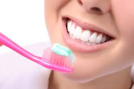
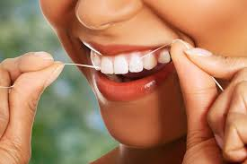
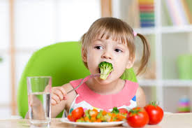
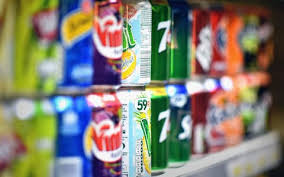
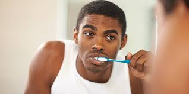

SHOMAH HEALTHCARE
GREAT DENTAL TIPS
Say cheese!
That's the most widely used confirmation call used by people to inform a camera operator that they are ready to have their picture taken. I am sure you have used it too at some point. The purpose of saying cheese is so that your teeth will be visible, giving the appearance of a smile.
Having bad dental hygiene can make it difficult for anyone to say something as simple as cheese or to smile.
However, not being able to say cheese or smile pales in comparison to the avalanche of dental and oral diseases that you can suffer from if you treat your dental hygiene with contempt. Diseases such as gum disease, oral cancer and terrifyingly horrible breath (which is often an indication of other oral problems) can invade your mouth and make your life a living hell.
In fairness to some people, the problem -- besides not caring about dental hygiene -- can also be caring wrongly.
Are you tired of keeping your lips tight shut in social circles? Or perhaps you know someone having some serious dental nightmare? Here are some dental hygiene tips to ensure that you always you maintain good healthy, white teeth.
- Brush your mouth properly
- Floss regularly
- Ensure your diet is teeth-friendly
- Limit intake of sodas and alcohol.
- Visit your dentist regularly
- Leave a little flouride in your mouth before bedtime
Yes, I said mouth, not teeth. The reason is that your teeth is not the only thing in your mouth; you have your gum, your tongue and the roof of your mouth. Those need cleaning too. When brushing, place the bristles of the toothbrush at a 45-degree angle near the gum line, such that the bristles are in contact with both the teeth and the gum. Brush using a back and forth, up and down movement. When you are done repeat the same procedure for the inner surfaces of your teeth and gum. Then brush the surfaces of your tongue and roof of your mouth. This will help to get rid of bacteria that cause bad breath. Remember to brush your teeth and gum lightly; do not attack them with the bristles, as this will do more harm than good. Also, make a habit of brushing at least twice a day, preferably in the morning and in the evening.
As wonderful as brushing regularly is, it is not holistic in its responsibility to clean your teeth. Brushing can clean the surface of the teeth, but it cannot do the same for the spaces in between teeth. This is where flossing comes in. It helps to get rid of food residue and other detrimental substances stuck between the teeth. If you really care about your dental hygiene (and you should), get into the habit of flossing at least once a day.
For most people, if not everybody, our primary reason for eating something is that it tastes good. But have we ever considered what this different foods or snacks do to our teeth? Foods such as nuts, fruits (such as apples), cheese, chicken and vegetables are teeth friendly. Something extra to know about cheese is that it causes your salivary gland to produce more saliva, which neutralizes acid.
Tobacco for one, is something you should run away from. Avoiding this can save you from some periodontal complications such as oral cancer. Furthermore, stuff that you will take to mask the smell of tobacco such as sweets, tea or coffee will just end of doubling the damage to your teeth already caused by the tobacco. You should also limit your intake of soda and alcohol. These contain phosphorus, which is an important mineral for a healthy. But too much of everything is bad and this applies to phosphorus too. Too much of it can deplete the calcium level of the body, causing dental hygiene problems such as tooth decay and gum disease. Go instead with beverages that will help to build enamel strength and water, which hydrates your body better than any sugary drink ever will. Here is a helpful tip: if you must take sodas or alcohol, do so with a straw to avoid the drink having direct contact with your teeth.
Applying everything stated in the previous points is not an excuse not to go for regular dental checkup. All you can do is your best and then leave the rest to the dental care experts. As permissible as your schedule is, make it a habit to visit a dental care clinic regularly for full oral checkup and teeth cleaning. There are dental problems that you may not be able to identify on your own. Adhering to this can save you a whole world of hurt in the long run.

Fluoride helps to strengthen the tooth surface so why rinse it off after brushing your teeth? For many people it may not be ideal to carry toothpaste residue in their mouth the whole day and frankly it makes no logical sense as you will most likely make the mistake of swallowing it during the course of the day. So it is not advisable to do this when brushing your teeth in the morning as you get ready for work. But what about at night before you go to bed? This is a better time to do this. Allow the fluoride sit on the surface of the teeth by not rinsing off the paste with water after brushing. If you have just had a meal that leaves residue in your mouth, then brush your mouth twice. First time around is to get rid of the food residue and to avoid bacterial proliferation. After brushing the second time, just spit out the toothpaste and leave the residue on the teeth rather than rinsing it off with water.
